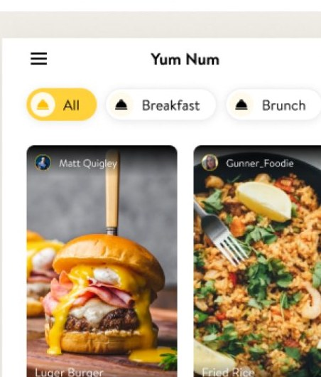
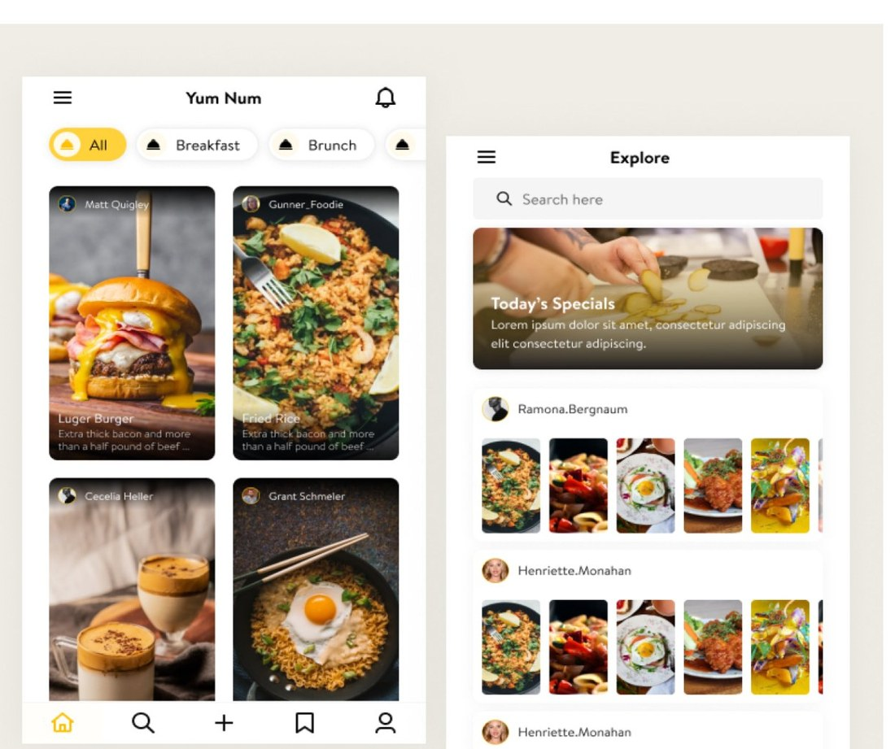
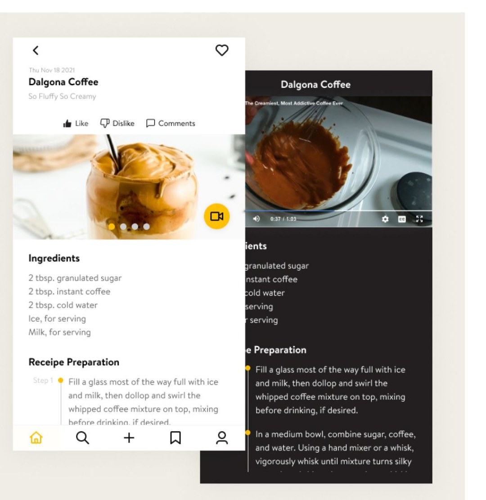

Where you share food recipes and connect worldwide
Where You Share Food Recipes & Connect Worldwide
A social food recipe platform combining rich visual recipe feeds, video preparation steps, and global community interaction.

Bridging Cooking Instruction & Social Discovery
Traditional recipe apps are static databases. Users lack dynamic social engagement, clear step-by-step video guidance, and food creator community.
Research & Discovery
Target Audience
- Home Chefs & Foodies: People looking for quick inspo, visual meal ideas, and social validation for their cooking.
- Food Content Creators: Video creators and culinary bloggers wanting a dedicated platform to showcase recipes via photo grids and video reels.
- Beginner Cooks: Users who need clear, step-by-step ingredient lists and video preparation guides that are easy to follow in real-time.
Key Research Insights
- Visual First Discovery: Users prefer card-based image/video feeds over dense text lists when deciding what to cook.
- Kitchen Usability: Bright white screens in low-light kitchens cause glare; a dedicated Dark Mode option significantly improves readability while cooking.
- Engagement: Features like “Like”, “Dislike”, and “Comments” help users instantly gauge recipe reliability and community feedback before trying a dish.
Information Architecture & User Flow
- Top Category Bar (All, Breakfast, Brunch, Lunch, Dinner)
- Masonry / Grid Cards featuring creator avatars, high-res dish photos, dish names, and short descriptions
- Global Search Bar (Search recipes, creators, or ingredients)
- Featured Banner (Today’s Specials)
- Creator Profile Highlights & Multi-photo Recipe Galleries.
- Recipe Header & Creation Date
- Interactive Social Controls (Like, Dislike, Comments)
- Floating Video Guide Toggle
- Bulleted Ingredients List & Step-by-Step Preparation text.
- Full-width Video Player with playback controls
- High-contrast Dark theme optimized for kitchen cooking
- Step-by-step preparation list rendered with clear visual hierarchy.
Visual Design & UI
Color Palette
Primary Brand Color: Warm Sunflower Yellow — evokes appetite, energy, and warmth.
Light Theme Background: Soft Warm Gray / Off-White
Dark Theme Background: Deep Charcoal / OLED Black
Text & Typography: Dark Slate for Light Mode; Crisp Pure White for Dark Mode.
Bottom Navigation Bar:
5 Core Anchor Icons
Home | Explore/Search | Create/Add Recipe | Saved/Bookmarks | Profile
Screen Breakdown
Feed Screen: Features a pill-based category selector (Breakfast, Brunch) and card layouts highlighting creators (Matt Quigley, Gunner Foodie) and dishes (Luger Burger, Fried Rice).
Explore Screen: Offers a horizontal carousel for “Today’s Specials” and curated user galleries (Ramona Bergnaum, Henriette Monahan).
Recipe View (Dalgona Coffee):
- Features clear ingredient measurements (2 tbsp. granulated sugar, 2 tbsp. instant coffee, 2 tbsp. cold water, ice, milk).
- Smooth step-by-step preparation guide (“Step 1: Fill a glass most of the way full with ice and milk…”).
- Dual-theme toggle enabling high-contrast OLED Dark Mode for cooking.


Impact & Key Takeaways
Community-Driven Cooking: Blending social networking with structured recipe cards creates higher user retention and daily active engagement.
Accessibility in Design: Implementing Dark Mode directly addresses the physical context of the user (cooking in varied lighting conditions without screen timeout distractions).